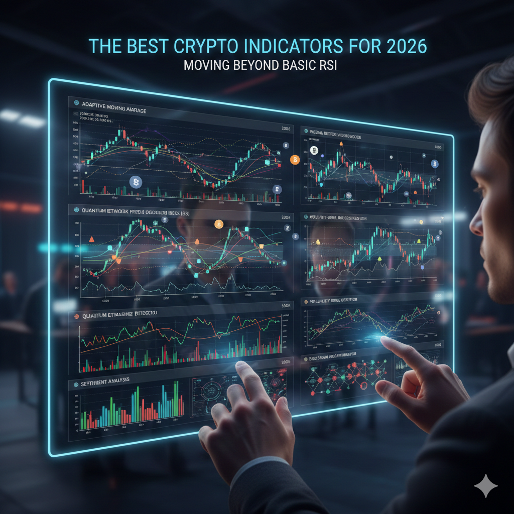

The Best Crypto Indicators for 2026: Moving Beyond Basic RSI
In the 2026 market, retail "lagging" indicators like the standard RSI or basic Moving Averages are no longer enough to stay ahead. With institutional flows now accounting for over 60% of Bitcoin's daily volume, the most useful indicators have shifted toward real-time liquidity and volume-weighted data.
To thrive this year, you need tools that show you where the "Smart Money" is positioned rather than just where the price has been. Here is our curated list of the top-performing indicators for the current regime.
1. Anchored VWAP: The Institutional Benchmark
The Volume-Weighted Average Price (VWAP) is the "fair value" line for the big players. In 2026, "Anchored" VWAP has become the gold standard. Instead of a rolling average, you "anchor" it to a specific event—like a macro low or an ETF approval date.
- Why it works: It calculates the average price based on volume since a specific point in time. If price stays above the anchor, the "average buyer" from that event is in profit, creating a psychological support zone.
2. Volume Profile (Fixed Range)
Price is a liar, but volume is the truth. The Volume Profile shows you at what price the most trading occurred, rather than when it occurred.
The Pro Tip: Look for the Point of Control (POC)—the price level with the highest traded volume. In 2026's range-bound markets, the POC acts like a magnet. Price will often consolidate at the POC before making a violent move to the next "Low Volume Node."
3. Funding Rates as Sentiment Oscillators
With the explosion of Perpetual Futures (Perps), Funding Rates have replaced the RSI as the best gauge for "overbought" conditions.
- Positive Funding: Longs are paying shorts (Market is too bullish/crowded).
- Negative Funding: Shorts are paying longs (Market is fearful/potential for a "Short Squeeze").
4. Indicator Performance Comparison
| Indicator | Type | Best Use Case | Reliability |
|---|---|---|---|
| Anchored VWAP | Overlay | Finding institutional support | High |
| Volume Profile | Volume | Identifying "Hidden" SR levels | Very High |
| Funding Rates | Sentiment | Timing market reversals | Medium-High |
| Stochastic RSI | Oscillator | Scalping entries | Low (Fakeouts) |
5. On-Chain NUPL (Net Unrealized Profit/Loss)
Exclusive to crypto, NUPL looks at the entire network's profit/loss. In early 2026, we've seen this move into the "Anxiety" zone.
When NUPL is very high (Euphoria), it signals a macro top. When it's in the blue/purple (Capitulation) zones, it has historically been the best "Buy the Dip" indicator for long-term investors, as it measures actual holder pain.
6. How to Build Your 2026 Toolkit
- Don't Cluster: Using RSI, MACD, and Stochastics together is redundant—they all measure momentum.
- The 3-Layer Rule: Use one Trend indicator (EMA), one Volume indicator (Volume Profile), and one Sentiment indicator (Funding Rates).
- Focus on Orderflow: In 2026, tools like Bookmap or Footprint Charts are often more useful than traditional candles for seeing where limit orders are "stacked."